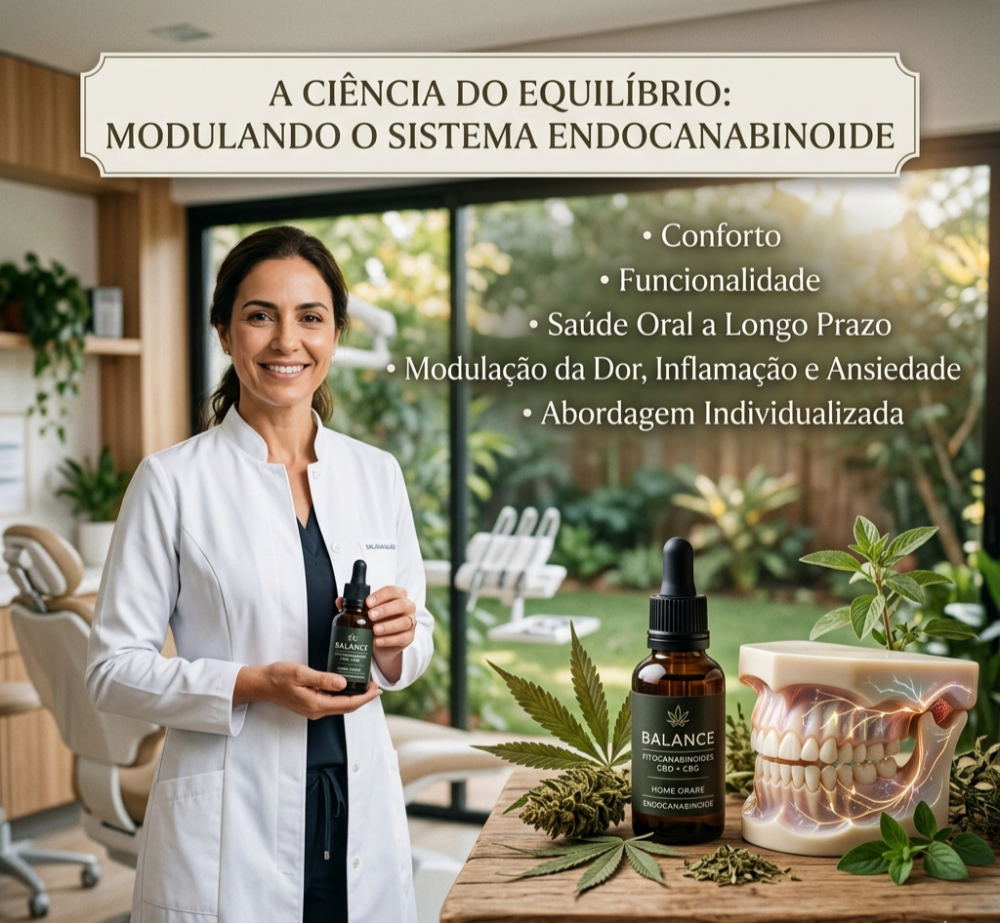

Mito 1
“O tratamento causa efeitos psicoativos, tipo ‘barato’.”
Verdade
Utilizamos fitocanabinoides purificados (como CBD e CBG), que atuam na modulação da dor e da inflamação, sem produzir efeitos recreativos ou alteração de consciência.
Odontologia de alta precisão
Dr. Larisson De Lara | CRO/MA 010457
Especialista em Endodontia e Odontologia Canabinoide.
Transformando o manejo da dor através da modulação do sistema endocanabinoide.
Atendimentos em Imperatriz-MA, Guarapuava-PR, Pinhão-PR e online.

Odontologia Canabinoide não é sinônimo de recreação. É ciência aplicada para controlar dor, inflamação e ansiedade.
“O tratamento causa efeitos psicoativos, tipo ‘barato’.”
Utilizamos fitocanabinoides purificados (como CBD e CBG), que atuam na modulação da dor e da inflamação, sem produzir efeitos recreativos ou alteração de consciência.
“É um tratamento experimental e ilegal.”
A terapia é regulamentada, prescrita dentro das normas da Anvisa e dos conselhos de classe, baseada em evidência científica e em protocolos de segurança bem estabelecidos.
“Substitui todos os tratamentos convencionais.”
A Odontologia Canabinoide é uma terapia complementar avançada que potencializa resultados onde a medicina convencional encontra limites, sem substituir exames, cirurgias ou medicações necessárias.
Modulação do sistema endocanabinoide para conforto, funcionalidade e saúde oral a longo prazo.
O sistema endocanabinoide é uma rede de receptores presente em todo o organismo, incluindo tecidos orofaciais, articulações temporomandibulares e estruturas nervosas envolvidas na dor. Quando há desequilíbrio — por estresse, inflamação crônica, bruxismo ou traumas — o corpo perde parte da capacidade de modular essas respostas.
A terapia com fitocanabinoides (como CBD e CBG) auxilia a restabelecer a homeostase, atuando em pontos-chave da inflamação, da sensibilidade à dor e da ansiedade. Na odontologia, isso permite abordagens mais confortáveis em casos de:
O plano terapêutico é sempre individualizado, integrando exames, histórico emocional, hábitos de vida e respostas aos questionários clínicos desenvolvidos especificamente para o acompanhamento de dor, estresse e sono.

Um protocolo estruturado para que cada etapa seja segura, mensurável e confortável.
Entrevista clínica detalhada, análise do histórico odontológico e médico, aplicação de questionários específicos (bruxismo, estresse, avaliação neuropsicológica) e avaliação de fatores de risco.
Definição personalizada de tipo de fitocanabinoide, dosagem inicial, vias de administração e integração com outros tratamentos odontológicos (como endodontia e placas oclusais).
Ajustes graduais até atingir a janela terapêutica ideal, equilibrando eficácia clínica (dor, sono, ansiedade, função mastigatória) e segurança.
Monitoramento contínuo com reavaliação dos sintomas, impacto funcional e qualidade de vida, atualizando o protocolo sempre que necessário.
Cada via é escolhida com base no quadro clínico, na intensidade dos sintomas e no perfil do paciente.
Indicadas para ansiedade pré-operatória, dores crônicas, bruxismo e distúrbios de sono associados ao quadro odontológico. Permitem titulação fina de dose e ação sistêmica.
Utilizada em lesões ulcerativas, inflamações localizadas e manejo de desconforto pós-operatório em tecidos orofaciais, com foco em ação local e rápida.
Reservada para situações específicas de crises agudas de dor ou ansiedade extrema antes de procedimentos, sempre com orientação e monitoramento profissional.
Quando a Odontologia Canabinoide pode ser um diferencial concreto.

Conheça os princípios que orientam cada etapa do atendimento odontológico.
Atuação embasada em instituições de referência como IOA, MANDIC e em atualização constante com especialistas da área, que pesquisam e aplicam a terapia canabinoide com rigor científico.
Clareza desde o primeiro contato. Sem surpresas, com foco em resultado clínico.
R$ 300,00
Consulta detalhada, aplicação dos questionários clínicos e construção do plano terapêutico.
R$ 250,00 – R$ 350,00
Formulações com fitocanabinoides, definidas conforme indicação clínica e prescrição personalizada.
R$ 450,00
Preparações específicas para casos que exigem protocolos mais avançados de modulação da dor.
*Os valores podem variar de acordo com ajustes de dose, tipo de formulação e necessidades individuais.
Acesse sua área exclusiva para preencher questionários e acompanhar seu tratamento.
Escolha a melhor forma de iniciar seu acompanhamento.
E-mail: larissondlaras@gmail.com
WhatsApp: WhatsApp
Instagram: @drlarissondelara